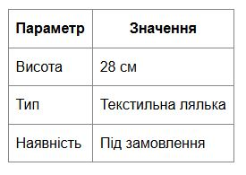
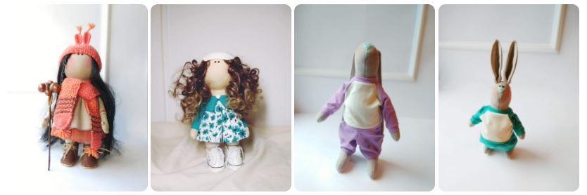
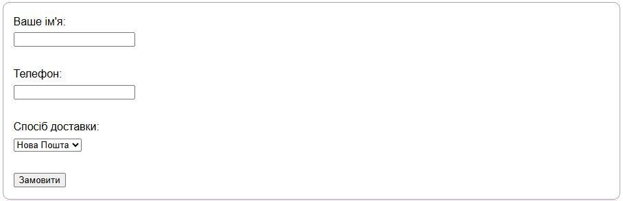
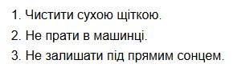

Тема, мета, місце розташування
Тема: DollArt — інтернет-магазин авторських ляльок ручної роботи.
Мета: Створити макет та головну сторінку веб-застосунку з HTML, таблицями, формами, списками та зображеннями.
Місце розташування:
- Репозиторій WEB-застосунку: Репозиторій WEB-застосунку
- Жива сторінка WEB-застосунку: Жива сторінка WEB-застосунку
- Репозиторій звіту: Репозиторій звіту
- Жива сторінка звіту: Жива сторінка звіту
Опис предметного середовища
DollArt — це веб-платформа для демонстрації та продажу текстильних ляльок ручної роботи. Користувач переглядає каталог, обирає ляльку, додає її в кошик та оформлює замовлення. Майстриня отримує контактні дані і виготовляє/надсилає замовлення. Адміністратор (майстриня) може додавати нові ляльки, редагувати опис, змінювати статус товарів.
Функціональні та нефункціональні вимоги
Функціональні вимоги
- Перегляд каталогу ляльок
- Перегляд детальної сторінки
- Додавання в кошик
- Оформлення замовлення через форму
- Замовлення індивідуальних ляльок
- Адміністрування каталогу
Нефункціональні вимоги
- Адаптивність
- Швидке завантаження
- Оптимізація зображень
- Інтуїтивний дизайн
Структура документа
Оберіть підпункт зліва для перегляду HTML-коду таблиць, зображень, форм та списків.
HTML-код таблиці
<table>
<tr>
<th>Параметр</th>
<th>Значення</th>
</tr>
<tr>
<td>Висота</td>
<td>28 см</td>
</tr>
<tr>
<td>Тип</td>
<td>Текстильна лялька</td>
</tr>
<tr>
<td>Наявність</td>
<td>Під замовлення</td>
</tr>
</table>
Cкріншот таблиці.
Теорія.
Тег <table> визначає HTML таблицю. Кожен рядок таблиці визначається тегом <tr>. Кожен заголовок таблиці визначається тегом <th>. Кожна чарунка з даними таблиці визначається тегом <td>. За замовчуванням текст в елементах <th> виділений жирним шрифтом і відцентрований. За замовчуванням текст в елементах <td> є звичайним і вирівняним за лівим краєм.
HTML-код зображення
<img src="images/лялька2.jpg" alt="Лялька ручної роботи в помаранчевому платті">
<img src="images/лялька1.jpg" alt="Лялька ручної роботи в блакитному платті">
<img src="images/заєць1.jpg" alt="Заєць ручної роботи в блакитному костюмі">
<img src="images/заєць2.jpg" alt="Заєць ручної роботи в лавандовому костюмі">
Cкріншот зображення.
Теорія.
В HTML зображення визначаються за допомогою тега <img>. Тег <img> пустий, містить лише атрибути і не має закриваючого тега. Атрибут src вказує URL (вебадресу) зображення. Атрибут alt надає альтернативний текст для зображення, якщо користувач з якоїсь причини не може його переглянути: через повільне підключення до Інтернету, помилки в атрибуті src або якщо користувач використовує програму читання з екрана (скрінрідер). Значення атрибута alt має описувати зображення, тобто те, що на ньому зображено. Можна використовувати атрибути width та height. Атрибути width та height завжди визначають ширину і висоту зображення в пікселях.
HTML-код форми
<form>
<label>Ваше ім'я:<br>
<input type="text" required>
</label><br><br>
<label>Телефон:<br>
<input type="tel" required>
</label><br><br>
<label>Спосіб доставки:<br>
<select>
<option>Нова Пошта</option>
<option>УкрПошта</option>
<option>Кур’єр</option>
</select>
</label><br><br>
<button type="submit">Замовити</button>
</form>
Cкріншот форми.
Теорія.
HTML елемент <form> визначає форму, яка використовується для збору користувацького вводу. Елемент <input> є найбільш важливим елементом форми. Елемент <input> може відображатися кількома способами, в залежності від атрибута type. <input type="text"> Визначає однорядкове поле вводу текста. <input type="radio"> Визначає перемикач (для выбору одного з кількох варіантів). <input type="submit"> Визначає кнопку відправки (для відправки форми). Атрибут action визначає дію, яку буде виконано при надсиланні форми. Зазвичай дані форми відправляються на вебсторінку на сервері, коли користувач натискає кнопку надсилання (submit). Атрибут target вказує, чи буде надісланий результат відкриватися в новій вкладці браузера, у фреймі або в поточному вікні. За замовчуванням значення '_self' означає, що форма буде відправлена в поточному вікні. Щоб зробити результат форми відкритим в новій вкладці браузера, використовуйте значення '_blank'. Іншими допустимими значеннями є '_parent', '_top' або name, яке представляє ім’я iframe. Атрибут method вказує метод HTTP (GET або POST), який буде використовуватись при надсиланні даних форми Кожне поле вводу повинно мати атрибут name для надсилання. Якщо атрибут name опущений, дані його поля вводу не будуть відправлені взагалі. Елемент <fieldset> використовується для групування пов’язаних даних у формі. Елемент <legend> визначає заголовок для елемента <fieldset>.
HTML-код списку
<ol>
<i>Чистити сухою щіткою.</li>
<li>Не прати в машинці.</li>
<li>Не залишати під прямим сонцем.</li>
</ol>
Cкріншот списку.
Теорія.
Невпорядкований (ненумерований) список починається з тега <ul>. Кожний елемент списку починається з тега <li>. CSS властивість list-style-type використовується для визначення стиля маркера елемента списку: disc: Встановлює маркер елемента списка як маленьке чорне коло (за замовчуванням); circle: Встановлює маркер елемента списка у вигляді маленького пустого кола; square: Встановлює маркер елемента списка у вигляді квадрата; none: Елементи списка не будуть відмічені (маркери відсутні). Впорядкований (нумерований) список починається з тега <ol>. Кожний елемент списку починається з тега <li>. Атрибут type тега <ol> визначає тип маркера елемента списка: type="1": Елементи списка будуть пронумеровані цифрами (за замовчуванням); type="A": Елементи списка будуть пронумеровані заглавними літерами; type="a": Елементи списка будуть пронумеровані рядковими літерами; type="I": Елементи списка будуть пронумеровані великими римськими цифрами; type="i": Елементи списка будуть пронумеровані маленькими римськими цифрами.
Головна сторінка WEB-застосунку
Код головної сторінки WEB-застосунку
<!DOCTYPE html>
<html lang="uk">
<head>
<meta charset="UTF-8">
<title>DollArt — Авторські текстильні ляльки</title>
<link rel="stylesheet" href="https://cdnjs.cloudflare.com/ajax/libs/font-awesome/6.4.0/css/all.min.css">
<style>
body { font-family: Arial, sans-serif; line-height: 1.6; max-width: 900px; margin: auto; }
header, footer { color:blueviolet; background: #f2e8f4; padding: 15px; margin-bottom: 20px; border-radius: 10px; }
nav a { margin-right: 15px; font-family: Arial, sans-serif; color:blueviolet;}
img { width: 200px; border-radius: 10px; }
table, th, td { border: 1px solid #888; border-collapse: collapse; padding: 8px; }
form { margin-top: 20px; padding: 15px; border: 1px solid #aaa; border-radius: 10px; }
h1, h2, h3 {color:blueviolet;}
</style>
</head>
<body>
<header>
<h1>DollArt — інтернет-магазин авторських ляльок</h1>
<nav>
<a href="index.html">Головна</a>
<a href="about.html" target="_blank">Про проєкт</a>
</nav>
</header>
<section>
<h2>Новинки колекції</h2>
<img src="images/лялька2.jpg" alt="Лялька ручної роботи в помаранчевому платті">
<img src="images/лялька1.jpg" alt="Лялька ручної роботи в блакитному платті">
<img src="images/заєць1.jpg" alt="Заєць ручної роботи в блакитному костюмі">
<img src="images/заєць2.jpg" alt="Заєць ручної роботи в лавандовому костюмі">
<h3>Матеріали ляльки</h3>
<ul>
<li>Трикотаж</li>
<li>Бавовна</li>
<li>Фліс</li>
<li>Акрилові нитки</li>
<li>Натуральне волосся (шерсть)</li>
<li>Взуття</li>
<li>Аксесуари</li>
</ul>
<h3>Догляд за лялькою</h3>
<ol>
<li>Чистити сухою щіткою.</li>
<li>Не прати в машинці.</li>
<li>Не залишати під прямим сонцем.</li>
</ol>
</section>
<section>
<h2>Характеристики ляльки</h2>
<table>
<tr>
<th>Параметр</th>
<th>Значення</th>
</tr>
<tr>
<td>Висота</td>
<td>28 см</td>
</tr>
<tr>
<td>Тип</td>
<td>Текстильна лялька</td>
</tr>
<tr>
<td>Наявність</td>
<td>Під замовлення</td>
</tr>
</table>
</section>
<section>
<h2>Оформлення замовлення</h2>
<form>
<label>Ваше ім'я:<br>
<input type="text" required>
</label><br><br>
<label>Телефон:<br>
<input type="tel" required>
</label><br><br>
<label>Спосіб доставки:<br>
<select>
<option>Нова Пошта</option>
<option>УкрПошта</option>
<option>Кур’єр</option>
</select>
</label><br><br>
<button type="submit">Замовити</button>
</form>
</section>
<footer>
<p>Ми в соцмережах:</p>
<a href="https://www.instagram.com/dolls_voloshka?igsh=MW90Y3IybzhjeG41eA==" target="_blank">
<i class="fa-brands fa-instagram"></i>
</a>
<a href="https://facebook.com/your_page" target="_blank">
<i class="fa-brands fa-facebook-f"></i>
</a>
<a href="https://youtube.com/your_page" target="_blank">
<i class="fa-brands fa-youtube"></i>
</a>
<p>© 2025 DollArt. Всі права захищені.</p>
</footer>
</body>
</html>